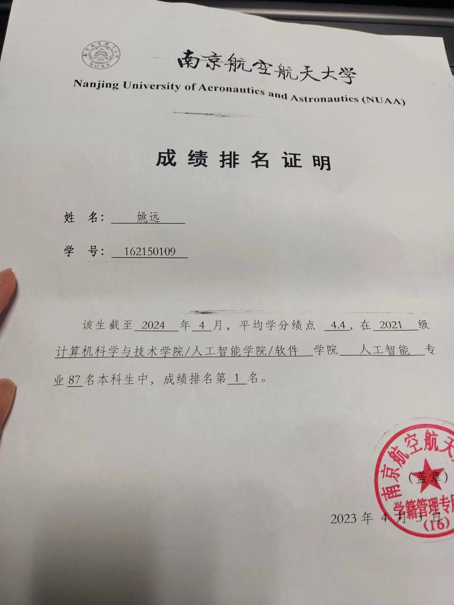

变正常之后大概率会全删掉
5.27
恨NUAA的一天
今天操作系统实验老师也发力了
看样子又一个老师将要失去母亲
整理一下ddl：
| thing | ddl |
|---|---|
| 操作系统实验 | 5.29 |
| 数据库作业 | 6.3 |
| 多智能体期末 | 6.4 |
| 知识图谱 | 6.20 |
| 夏令营 | hh |
啊，总感觉忘了什么，脑子不够用了，先不想了
今天的话，把计网运输层搞定了
准备开应用层的坑
然后的话，靠刷王道，了解了一下页式内存和段式内存
有时候挺无助的，明明自己对这些很感兴趣，但是总会由于各种破事，对这些知识的掌握停留在八股文层面上
nuaa是这样的，不让你进步，除非你付出掉GPA的代价
但我要专业第一啊，不然南软进不去
没办法的事
明天的话，继续复习多智能体，然后把湖科大结束掉，开应用层的坑
然后有空的话继续刷操作系统八股，最后有时间看看傻逼头歌实验
真有人会认真做吗？这不纯浪费时间的玩意
周三的话看看能不能把sql的坑结束掉
该开始15445了，但是，呵呵
我没办法在nuaa做到心如止水
压抑了一整天的坏情绪，我不敢对任何人展现啊
有时候上课走神，会幻想自己毁掉这所学校的场景
唉，反正我本来就不是个正常人
我还经常幻想过把仇人杀死的场面呢
这是经常在我梦中发生的场面
所以，yy运气差是有原因的
毕竟大部分人，yy都讨厌，yy都不想他们过的好
不要变成我这样子
我希望世界上的另一个我，是个阳光向上的人
是个超级高配版的我
我大概率无可救药了
目前唯一能想到的方法，是离开nuaa，去其他我应该去的地方
爱你喵
5.25
南软还是没消息
那么，又是开摆的一天
啊，又是恨NUAA的一天
我能明显感觉到，在痛恨这所学校以及这所学校的人的时候，我的精神明显不正常。
有段时间，我陷入深深的自责
愧疚
觉得为什么，自己想要的东西，我却拿不到
一开始以为是没有拼尽全力
后来，找到了原因
强者从不抱怨环境，那是因为在抱怨环境的时候，他们还不是强者，直到离开了那个环境，终于重获新生
只有极端的恨与爱，才有意义
在保持理智的情况下
如果，我哪一天，撑不下去了
会告诉你的
5.24
无论如何，人是要向上走的
逆袭什么的，应该是只针对自己而言
但是只考虑自己的话，为什么要在乎别人对自己的看法呢
讨厌我的人估计是不讨厌我的人的十倍
其中不乏因为我的烂性格、我的菜，或者我坏了他们的好事
没事啊，讨厌我，你就应该去死
无论是讨厌、恨，还是孤独，都在为我凝聚爱的水滴
我要极端的东西
极端的厌恶，极端的爱
我要成为奇迹
这份奇迹与你们无关
妨碍我，我会杀了你
5.23
实习。。。
我实习尼玛
NUAA还真就是一件人事不干
又是痛恨NUAA的美好的一天哪
你们有这么好的学校吗
5.22
给南大发拒信（？？？）了，南计再见
如果我本身是cs的话，早点接触sys的话，说不定真会去njucs
但是现在对科研已经绝望了，njuse我来了
软微清软这种预推免再考虑了，不过到时候估计已经被ex的掉出rk1了，所以夏令营先上岸的好
唉，我恨NUAA一辈子
每天都会在某个时间点，对这所学校突然充满不满的情绪
不仅仅是学校本身，还有这里的人
恶心我有什么用呢？能改变你是废物的事实吗
换以前估计会把很多时间浪费在别人身上
但现在好多了，毕竟我已经不是NUAA的人了
哦，从来都不是NUAA的人
自杀也不会在这里死
得感谢把我pull下来，重新在新的容器docker run的人
5.20 南大！
太惊喜了，非科班的鼠鼠居然过了地狱难度的线上测（408plus）
不过，作为一名acmer，把数据结构和一些算法的题目做出来了，看样子也算正常？
当然，这几天一直在学的计网也占了一定的作用。以及xv6 lab加深的对os的理解。
（主要是编译原理一道不会，所以考完那天觉得自己没戏了
虽然无论过不过，都会放弃njucs
但是至少开了个好头，标志着我开始彻底逃离AI了
接下来的话，还是准备南软笔面试为主
到时候又是另一套没学过的题目，软件工程什么的
似乎还是大题，emmm
等南软通知出来再开坑吧
明天记得给南大发放弃入营的邮件
今天是520喵
陪最喜欢的vv过喵
5.18
njucs，预推免见（
上来给我干五道编译原理，我没绷住，差点笑出声
这考牛魔啊
不过本来就没想去
理了个头发，这下真哥布林了
其实如果没毁容的话，我应该还是挺帅的
哈哈无所谓了，都过去了
AtCoder摆了
不过明天有一个ARC，不知道能不能上个蓝
能上蓝的话，相当于cf又上了个紫
至少说明我还没变太菜
又来了吗
唉
孩子，这不好笑
5.17
不要痛苦
不要遗忘
不要分开
5.16
今天开坑了数据库。坑真是越来越多了。
实际上不是开坑，只是为了复习学校课程（真挺难的，但是老师教的挺好），顺带准备保研
现在要学的课外的东西有计网、软工和JAVA设计模式（其实还可以算个操作系统？？？
软工的预习等南软通知出来再做决定
计网大概进度是四分之三了，传输层和应用层内容相对较少
然后的话，其实还有数学三件套，这个六月份再说
这周的话，看看能不能找时间，准备一下自我介绍
等数据库教完SQL那章，就开始15445的征程，毕竟只学八股的话，活得没意思
然后记得用英语六级替代一下学分，不过感觉这学期绩点要炸
唉，如果下学期掉出rk1的话，rw和清软应该就无缘了
不过也是活该，谁让你选了这么个丧心病狂的专业了呢
恶心的人那么多，全让你遇见了？
哦对，准备陶瓷了
今天下午的操作系统课，（由于上节课被提问过了）我这次直接选个角落位置睡觉，睡醒了起来刷王道计网
不过角落位置人也是很多的，虽然那些人跟我无冤无仇，但是我还是有点想sha了他们的冲动
无所谓，我本来就不是个正常人
今天天气挺好，和这所学校的氛围形成鲜明对比
我从小就很喜欢在阴暗的地方看日落，那种场面，有种说不清的美
当时我还很天真
现在我也可以，在NUAA这黑暗的地方，观赏和这片地方屁关系没有的日落
但是已经没有儿时的感觉了
总不能在上课的时候哭出来吧
没想到居然还有人，把我当成精神支柱来看
我以为我的精神状态，在大部分人眼里，就像个小丑一样
然而，却影响到了，真正好的人
所谓的大部分人，不用理会，他们都应该去死
要是我早点接触操作系统、数据库，或者图形学这些东西，我都不敢想象我会有多开朗
我受够了AI的垃圾学术氛围
对不起vv，yy是废物，这些东西都是yy一个人造成的，yy活该，让yy一个人承受这些吧
谢谢你
最喜欢你了
5.15
我想自杀
5.14
今天复播了一下
直播内容是刷力扣
然后的话，首先是不会用java写二分
然后是直接把困难题给切了
但是时间爆炸。力扣是需要卡常的。
看我直播的人还是挺多的，毕竟我有粉丝基础。
这样确实不容易那么孤单，也容易进入那种，极度专注的心流状态。
希望vv直播的时候也是这样的吧。
yy会一直陪你的
又开始痛苦了啊。。。
不是向他，发过誓了吗
这才第二天啊
每当快乐来临时，我总会担心，这种快乐什么时候会结束。
被我这霉运，真搞得有点ptsd了
不过没事啊
唉，好想听他再说一句爱我
5.13
我向他发过誓的，我死都要坚守：
1、yy要让他开心
2、yy要专注自己的事情
3、yy要脱离yy的苦海
4、yy要摆脱拖延症
今天是和这所学校隔离的第一天。
但实际上也只是心理上的隔离，毕竟这里的人，你怎么还是得遇见的。
实际上，不需要发誓，我也会走到这种地步
因为yy从小到大，都被当作异类
孤独是我的宿命
当个异类，非常的刺激啊（赞赏
想想就很爽
在创新班那群科研选手中，突然冒出来一个普通班的搞ACM的转码选手
抢走了本应该属于这些人的rk1，要在保研的时候转软工
走就业向
每一步，都是我自己做出的选择。但凡错了一步，我都将面临惨痛的后果
当然，付出的代价，也是比较惨重的
所以是时候忘掉这些痛苦了。
孤独？yy并不孤独
yy忍受了六年的痛苦，对于这些常见的苦痛已经习惯了。
yy现在怕什么
yy怕，好不容易，见到的光明
会在未来的某一刻，再度消失
就和一年前一样
我本能忍受黑暗
真的能有永久的友谊吗？
谁能给我一个，我愿意接受的答案？
更新一下ddl：
- sb操作系统作业
- 数据库作业
- sb操作系统实验
- sb多智能体论文pre
除了数据库其它随便水水就行了
重点是，接下来计划在六月前把计网搞定，其间和软工并发（今天因为满课，软工这部分摆了，唉，负罪感）
然后，得开始准备自我介绍，以及刷刷面经
哦对，别忘记了数学部分的复习
夏令营安排，应该是这样的：
sysucs、fducs、njuse、ruc信院、sjtuse
但感觉，thanks to我这倒霉的运气，能有几个能成真呢？
晚安，vv
5.10
习惯痛苦
5.9
上了一天课，感觉像赤了一天的石
今天主要整理一下最近的规划
ddl：
- 毕业生图像采集（什么）
- 智障操作系统实验
然后应该就没了，有了再加
最近要做什么呢？首先是专业课，我这里开了计网和软工的坑，然后跟着学校学数据库
操作系统？听天由命吧，过几天有空再买教材，再在王道上面刷。没时间的话就只刷考研真题
至于java，感觉已经入门了一点点
设计模式，找时间重拾了
还有15445，得先把C++智能指针和多线程编程再巩固一下，之前写的多线程trie已经忘的差不多了
主要是学校的破事情太多，真的很烦
但是也要记得，不要把你对这所学校的坏情绪带给别人
尽量吧。。。
5.8
唉唉，发现我的口语表达能力就是一坨
极限的定义都说不清楚了
另外，软件工程好抽象
感觉就是个纯文科，比计网还文科
不知道怎么学
emmm，还是得适当放松一会
感觉像今天这种，卷一整天，效果也一般般
不过没必要焦虑，毕竟我的优势在于机考，总会有比面试更重机考的地方要我的
只是，要学的东西，太多了
5.7 为了更好的虚拟世界
活在虚拟世界。
是个人（包括我）都觉得很可笑的想法。
但其实还好
毕竟同样作为逃避现实的方式
沉浸在虚拟世界，比寻求死亡要好的多
至少我父母，以及好朋友，不允许我选择后者
其实还是对现实生活抱有幻想的
不然我现在卷保研是为了什么
哈哈，还是跨保
njuai开了
如果现在回心转意，两个月的时间，也足够我重拾我的ai tech stack了
当然，想多了
我比自己想象的要更坚定
要真的分析，这所大学带给了我什么好的
那就是，不要在乎这里99%的人对你的看法
做好自己
不要因为你是rk1就瞧不起人
也不要因为你要卷开发岗，就认为自己低人一等
毕竟在走入社会之前，这可能是我最后一次，在现实和热爱中，选择热爱这个选项了
要说某位ex的学长，我还得感谢它
让我明白了，听从一个不靠谱的人，对我的人生是有多致命
现在的话，在乎的人，也就那么几个
感觉自由了许多
一起努力吧blackbird
只要学不死，就往死里学
哈哈，夸张了点
但是努力是肯定要努力的
至少不要让以后的我，对现在这段时光，心存后悔
嗯，不后悔就OK
4.30
终于踏马放假了，五一放五天
四月份结束了，这个月主要把项目经历给补了一个
另外也开始了专业课的预习（
作为缓冲的一个月，总体效果还是比较满意的
当然，主要还是认识了blackbird
呜呜呜，心都要化了
五月份得开始不当人了
指的是，要全力投入夏令营的战斗中了
所以，看看五一这五天，能不能过渡到这种战斗状态
战斗，爽！
要做的事，包括但不限于：
1、408启动！王道计网和操作系统狠狠刷（暂不考虑另外两个，因为去年南软没考
2、数据库启动！跟着学校老师一步一个脚印就好
3、软工启动！这个估计得跟着南软那个博客的PPT看
4、xv6启动！这个纯属是因为自己喜欢操作系统，想深入一下源码
5、面经启动！整理各类面试常见问题，并同步到博客上，优先级：CS>AI
6、JAVA启动！设计模式启动！每周都拿Java打AtCoder（
7、简历启动！项目经历把xv6魔改经历替换掉那两个B大创，至于CSAPP就算了，学着玩的东西哪能叫项目
然后的话，就是少水群，晚回宿舍。在实验室推gal都比回去被叫去打lol好
累的话，就趴一会
周末有空的话，整理一些常用算法，例如kmp这种，都忘的差不多了。。。
codeforces的话，div2以上如果blackbird打我就打，div3以下用小号拿java打
OK，画饼完成，回宿舍洗衣服了
4.28
好久没在这里写日寄了。。。主要是总是有人在我旁边
唉，真想找个能一直独处的地方生活
隐忍
不喜欢这里的一切
但也不能表达出来
没事，再忍一会
夏令营我就要上岸
已经忘记童年的梦想了
不过我或许就没有童年
当初抱着多么大的憧憬，进入这个学校
你要问这个学校对我做了什么
那我只能告诉你，做了很多
毕竟我还没毕业
不能说太具体
最近也没有什么学习的动力
今天还被扣平时分了
。。。你随便扣，我无所谓
在你这破课卷平时分就好比在一堆史里挑饭粒吃
不过就算忘记了儿时的理想
咱也要假装自己有理想
就跟假装自己是正常人一样
以后的生活会好的
相信自己
昨天拿java打了atcoder
结果莫名其妙在一道sb题上T了
卡了很久，结果换C++写就过了
现在也不知道什么原因，java会超2s，C++就60ms
唉，学啥啥不行
不过学java主要是为了学设计模式+应付保研机试的
以后主语言肯定还得是C++
五一假期前还剩两天
放松一下吧
多打会游戏
多找好朋友聊天
五一开始直接不当人
鬼知道我在写什么
4.06 结束的假期+想说的话
又是开摆的一天（
开了xv6 file system的坑，感觉好难
说实话，6.s081这课确实挺硬核
不过lab挺简单的，以后有空去做一下2020的lab，据说是要比2021的难
看了计网考研+打了atcoder。
唉，感觉ACM水平越来越差了
yy是一个冷漠的人
但是yy为了在现实活着，总是故作热情
正如yy这个姓名缩写，ta天生是个当演员的料
yy认为，ta活着，主要是因为父母希望他活着
yy不觉得自己有什么价值
yy很厉害，ta是某211大学人工智能专业的绩点第一
国家奖学金、CCF优秀大学生、三好学生标兵、各类奖学金与荣誉
当然，ta觉得最有价值的奖项，是那两块ICPC区域赛银牌
因此，很多人知道yy
也因此，很多人讨厌yy
yy也很累
和创新班一起排名的事实，让ta不得不费出大量精力维持专业第一
但是yy不知道为什么，要这么卷
yy觉得，自己只是想读研去个好学校
给ta普通的家庭争光
但是yy心也很累
yy喜欢计算机
yy喜欢ACM
但是ta不得已，放弃了ACM训练
yy十分想上紫
yy上了紫，又十分想上橙
但是直到现在，yy还是1900+的rating
yy开始怀疑自己
yy开始自责
yy觉得ta对不起ta的队友
yy开始讨厌AI
yy不知道，为什么自己要去学deep learning这种黑盒
为什么要让这种和计算机一点都不相关的东西，支配ta的时间
全连接网络、卷积神经网络、GoogLeNet、ResNet、Transformer
图片分类、目标检测、语义分割
CV、NLP、RL
ta觉得这些东西，一点也不好玩
yy开始讨厌别人
yy开始恨别人
有一天yy在icpc群，对群里的保研魔怔学长，恶言相向
yy觉得，acm，不all in，没有意义
yy不允许学长再去祸害别人，劝他们离开acm，去做ai科研
yy很孤独
yy不知道自己的未来该怎么办
没人能给yy指路
yy还是选择继续打acm
但yy也告诉队友dspr，ta不一定有时间训练
yy很自责
那个暑假，yy很痛苦
好在新的赛季，学校分别来了一名noi ag和noi cu的新生
yy觉得自己不能厚着脸皮，再混下去
yy让出了自己的名额
于是，ta的队友dspr拿金了
yy很高兴，yy这次终于没拖累别人
yy在实验室，看着xcpc board网站上《队长单身十年换区域赛金牌》的gold medal
突然，yy很想哭
yy也想拿金牌
但ta知道，ta的实力不配拿金牌
ta也知道，ta现在的任务，是赶紧做完数据挖掘的课程设计
yy开始打开vscode，开始自己的生活
yy离开了他所在的科研的组
yy不喜欢做ai科研
yy做出决定，重拾计算机
那个寒假，yy学完了csapp
那个寒假，yy还是很痛苦
但是，算是相对最不痛苦的假期了
yy，是演员的缩写
yy，也是抑郁的缩写
没人觉得，yy有抑郁
也没人觉得，yy是演员
他们只觉得，yy是个厉害的正常人
yy放假在家里，喜欢一个人呆在自己的房间
把门反锁
yy是社恐
亲人来看望，也休想看到ta
父母慌忙解释：ta在认真学习，不方便打扰
而不知道，ta此时，正趴在桌子上，一动不动
然而，ta的泪水，沾湿了整个衣袖
yy喜欢写知乎
yy曾经，还喜欢做视频，发B站
yy有1k+粉丝
yy觉得，网络上的人，比现实要好
yy认为，网络是最理想化的世界
yy觉得，现实不会存在和ta一样的人
yy觉得，没人会理解ta
yy开始在网络上寻找
每看到一个人点赞了yy的文章
yy都会很开心
yy受到了认可
yy觉得，自己还是有点价值的
yy在网络上，和在现实中，是两个人
yy并不期待，现实中，会有人来救ta
然而，yy还是选择活着
因为，父母活着
但是yy觉得，应该会有其他人
和ta很像的人，能和ta共情的人
梦境也是虚拟的世界
但在梦里，yy可以飞翔
yy没有翅膀
然而在梦里，yy可以飞向ta在现实当中，只能仰望的天空
突然，yy遇到了一只影子
yy看不清，是谁，飞在ta的上方
yy也很震惊，这次，不是yy一个人在飞翔
yy只见ta飞得越来越快
yy开始追赶
yy突然害怕，可能yy会跟丢ta
突然yy开始觉得，自己越来越轻
像是，少了很多包袱
yy不清楚为什么
yy就连，不清楚为什么，都不清楚了
yy只知道自己飞得越来越快
越来越高
终于，yy追赶上了ta
yy往下眺望，是一片美好的世界
尽收眼底
正当yy想看清那片影子的主人的时候
梦醒了
yy睁开眼睛
突然，一股泪意涌上心头
这次，yy根本忍不住
yy没办法控制住自己
任流泪水流淌在ta的脸上
沾湿ta的被子，沾湿ta的床单
大概哭了，半个小时吧
yy发现，时间还早
yy觉得，自己还能飞
yy发现，这次
是在现实中飞
ta要追逐的，是现实中，带领ta飞翔的人
一定，一定要等我
2024/4/6-2024/4/7凌晨
4.05 不因伤心落泪
xv6 multithread lab完成！
我个人感觉，多线程这一章非常难，特别是对coordination机制的lock的处理。然而lab却比较简单，感觉比较基础。
当然，我是sb，设置sp寄存器的时候忘记栈是从高地址往低地址延申的。卡了很久（
然后的话，今天也算比较摆的了，除了lab还随便糊弄了一下学校的专业课
万恶的学校作业（
4.04 摆烂的一天
唉，以为舍友走了可以在宿舍安静学习
事实上在宿舍只想打游戏（
终于把xv6 lock和sleep wakeup这一节给过了
太tm难了
明天早上拿点时间回顾一下xv6 book吧，感觉自己还是没懂这东西
然后开始第六个lab吧
4.03 准备出发
难得有时间独处一下，稍微整理一下这学期的行程。
今天抑郁症有点复发，所以不宜太卷。因此做规划是比较好的选择。
另外，终于拿到了盖章的排名，前五学期专业第一也板上钉钉

所以，我大概率，应该会有学上。
我目前夏令营的投递目标是：njuse，fducs，buaacs，ruc信院，最好能有个sysu保底，不过时间上很容易撞
由于我特别想去南软，所以前期就按照南软的要求进行预习（
当然预推免才是主战场。预推免投递目标看情况吧，如果南软优营了估计就摆了（虽然挺想去软微
所以为了完全的准备，第六学期还是得保持专业第一
所以，我初步的安排如下：
专业课方面，由于我是非科班，因此可以考虑把上课时间拿去刷王道考研教材
然后累了的话就去刷刷绿裙github repo上的经验贴，整理一下面经，估计会同步到这个blog上
项目方面，我特别喜欢操作系统，因此看看能不能做完xv6 lab的基础上进一步深入分析xv6源码。感觉能完全理解源码的话应该挺不错的。
然后暑假的话把15445做了，拿去水分散实习学分
另外大创一定得顺利结题，不然保研名额就没了（
机试方面，每周都打一打abc吧。另外跟着B站的董晓算法滚一滚板子（
另外南软只推荐java，我不怎么会java，有点难整hh
好的，话不宜说太多，饼不宜画太大。得开始卷了
2.14 结果和过程
自从高考失利后，我就不相信什么过程大于结果的说法了。
讲真，我发现，至少在我身上，并没有什么努力能得到回报的说法。
我特别在意结果
我只在意结果
过程有什么用
学习是个很快乐的过程，高端的人一般都会去体会这些过程，但这是建立在他们已经有了好的结果的基础之上
我要什么，我要华五的title，我要大厂开发岗offer
我只在乎结果，我只在乎最后能不能拿到钱
因此这三年来，当我特别在乎一件事情的结果的时候，命运就偏偏不让我拥有这个结果。
即使是一些小成就，命运都想尽办法让我得不到
我不知道是不是只有我运气这么差
但假设就我运气这么差，我该怎么活？
自大学以来，我就发现，除了高考没考好，应试能力能吊打同学，似乎就没有什么其他好的条件了。
没家境，没Npy，性格也好不到哪去
高考对我的伤害还是太大了
有时候真的很绝望
要是我再怎么努力，也被这该死的命运限制
我活着有什么用
2.10-2.11 他们称之为新年
大年初一半死不活地卷了一天（早上csapp，下午计网，晚上把cache lab通关后又卷了点java，发现java中的==不简单）
到了晚上十一点整个人都很虚，把最后的力扣刷完，躺在床上却睡不着。
好好好，相比于其他保研人我没什么优势。不过在焦虑方面我可谓是遥遥领先。
作为一个类跨保er（我自己发明的词，感觉从ai跨到cs/se也算跨保，至少难度跟跨保的难度一致），最难的莫过于前人的经验没有一个适用于我。
想着未来去南软，实习真挺香的，还不用搞科研，适合我这种只想摆烂的鼠鼠。
南软优营的学长，手上项目一堆，还参与过不少开源活动。
妈的，零项目鼠鼠落泪（大水创就算了，能顺利结题不耽误我保研就好）
然后南软还会考察什么软件工程、设计模式的。笑死，根本没学过，只能到时候靠补。
不过想着自己零项目挺难受的，于是考虑下学期开始做xv6的lab，看看能不能刷点简历上去。
当然前置课程是csapp，现在先把基础打好吧，不用着急。
就业向的话，好像只有南软了吧。
科研向，我只知道千万不要搞纯ai。主要原因是不喜欢对一个黑盒进行研究。
想着sys可能比较适合我，至少在自学csapp的过程当中我是比较享受的。
不过感觉学sys和研究sys可能是两个东西，到时候读研真搞sys的话，可能也挺痛苦的。
不过先不想这么多，先上岸再说。
我觉得njucs算是不错的选择，直到我看了往年的笔试题。
好家伙，还是冲南软吧（真的都不会！
给我整无语了，为什么我这不会那也不会。
大致看了一下题目，包含了408（只会数据结构）、csapp（ELF文件动态链接什么的，这应该是csapp的内容）、Linux（你妈，一堆命令我见都没见过）、编译原理等
好了，夏令营不可能报njucs的了，预推免再冲冲看
现在大致要学习并掌握的技术栈大致有：
- 操作系统
- 数据库
- 软件工程
- 设计模式
- java
- 计算机网络
距离夏令营还有不到五个月，我都不知道接下来的时间我该怎么活。
又孤独又痛苦
过年的，外面都是鞭炮的响声。
是真的吵